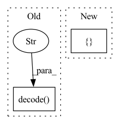

Pattern ID :10119
Before Change
// into datafrane to decode string
df = tfds.as_dataframe(ds.take(max_examples))
df["context"] = df["context"].str.decode("utf-8" )
df["question"] = df["question"].str.decode("utf-8")
// populate this with data records
self._examples = [{After Change
for row in ds.take(max_examples):
answers_text = row["answers"]["text"].numpy()
answers_start = row["answers"]["answer_start"].numpy()
answers = []
for label, start in zip(answers_text, answers_start):
span = dtypes.SpanLabel(start, start + len(label))
answers.append(dtypes.AnnotationCluster(label=label.decode("utf-8"), spans=[span]))In pattern: SUPERPATTERN
Frequency: 4
Non-data size: 2
Instances Fragment ID: 35889251
Project Name: pair-code/lit
Commit Name: a6c039d5551e66775d097a30ab69969aa5b65551
Time: 2022-06-24
Author: 31214277+aryan1107@users.noreply.github.com
File Name: lit_nlp/examples/datasets/question_answering.py
M Class Name: TyDiQA
N Class Name: TyDiQA
M Method Name: __init__(3)
N Method Name: __init__(4)
M Parent Class: lit_dataset.Dataset
N Parent Class: lit_dataset.Dataset
M File Name: lit_nlp/examples/datasets/question_answering.py
N File Name: lit_nlp/examples/datasets/question_answering.py
M Start Line: 11
M End Line: 24
N Start Line: 14
N End Line: 33
Before Change
def gsutil_getsize(url=""):
// gs://bucket/file size https://cloud.google.com/storage/docs/gsutil/commands/du
s = subprocess.check_output(f"gsutil du {url}", shell=True).decode("utf-8" )
return eval(s.split(" ")[0]) if len(s) else 0 // bytes
def url_getsize(url="https://ultralytics.com/images/bus.jpg"):After Change
def gsutil_getsize(url=""):
// gs://bucket/file size https://cloud.google.com/storage/docs/gsutil/commands/du
output = subprocess.check_output([ "gsutil", "du", url Fragment ID: 35889249
Project Name: ultralytics/yolov5
Commit Name: a2de5c5bf61f1165ffeb4af51dc5b24e8d04bff6
Time: 2023-02-13
Author: akx@iki.fi
File Name: utils/downloads.py
M Class Name: AnonimousClass
N Class Name: AnonimousClass
M Method Name: gsutil_getsize(1)
N Method Name: gsutil_getsize(1)
M Parent Class:
N Parent Class:
M File Name: utils/downloads.py
N File Name: utils/downloads.py
M Start Line: 29
M End Line: 30
N Start Line: 29
N End Line: 32
Before Change
if gpu.id in measurement.gpus_used(
) and gpu.id not in seen_gpus:
seen_gpus.add(gpu.id)
gpu_names.append((gpu.name).decode("ascii" ) )
with gpu:
mems = cuda.current_context().get_memory_info()
// convert bytes to GBAfter Change
Gets names and memory infos of GPUs used in measurements
gpu_dict = {}
for measurement in measurements:
for gpu_uuid, gpu_info in self._gpu_info.items():
if gpu_uuid in measurement.gpus_used():
gpu_name = (gpu_info["name"]).decode("ascii") Fragment ID: 35889243
Project Name: triton-inference-server/model_analyzer
Commit Name: 50f878682c545b5bbb3cb1abceda327d9872d800
Time: 2021-06-10
Author: asramesh@nvidia.com
File Name: model_analyzer/reports/report_manager.py
M Class Name: ReportManager
N Class Name: ReportManager
M Method Name: _get_gpu_stats(2)
N Method Name: _get_gpu_stats(2)
M Parent Class:
N Parent Class:
M File Name: model_analyzer/reports/report_manager.py
N File Name: model_analyzer/reports/report_manager.py
M Start Line: 506
M End Line: 526
N Start Line: 588
N End Line: 596
Before Change
proto = GenericFeatureStatisticsGenerator().ProtoFromDataFrames(
[{"name": "Facet Overview", "table": df}]
)
protostr = base64.b64encode(proto.SerializeToString()).decode("utf-8" )
template = os.path.join(
os.path.abspath(os.path.dirname(__file__)), "stats.html"
)After Change
datasets = []
for output_name, artifact_view in step.outputs.items():
df = artifact_view.read()
datasets.append({ "name": output_name, "table": df} )
h = self.generate_html(datasets)
self.generate_facet(h, magic)
Fragment ID: 35889241
Project Name: maiot-io/zenml
Commit Name: e51baa83069396f3ff822267e5250f84af1ad467
Time: 2021-11-14
Author: htahir111@gmail.com
File Name: src/zenml/post_execution/visualizers/facet_statistics_visualizer.py
M Class Name: FacetStatisticsVisualizer
N Class Name: FacetStatisticsVisualizer
M Method Name: visualize(3)
N Method Name: visualize(3)
M Parent Class:
N Parent Class:
M File Name: src/zenml/post_execution/visualizers/facet_statistics_visualizer.py
N File Name: src/zenml/post_execution/visualizers/facet_statistics_visualizer.py
M Start Line: 39
M End Line: 65
N Start Line: 47
N End Line: 52